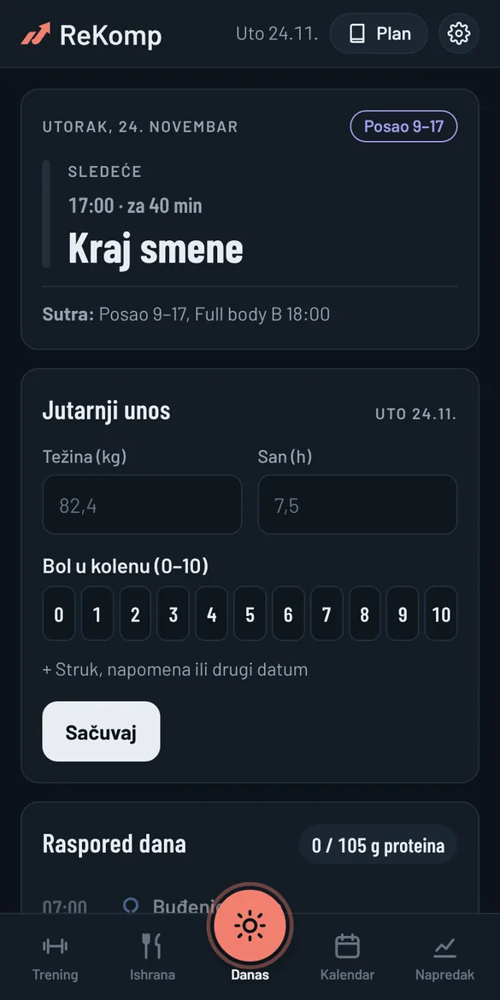
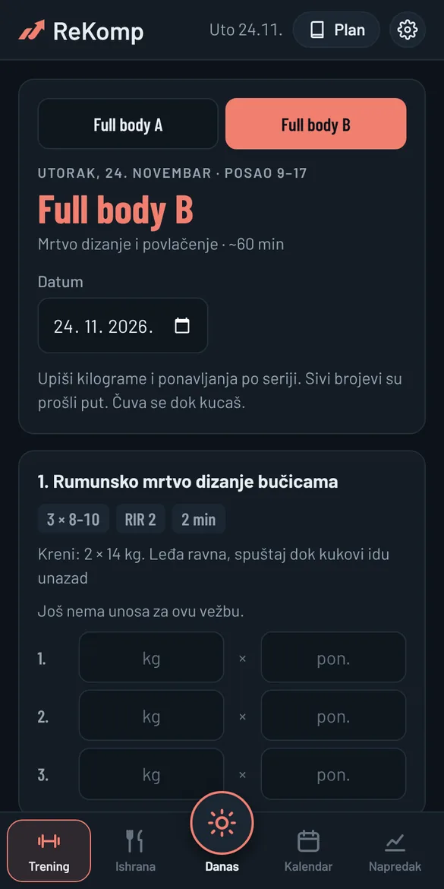
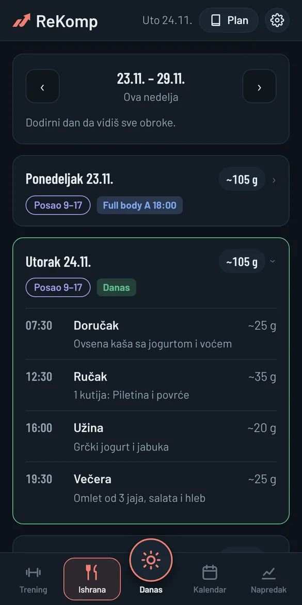
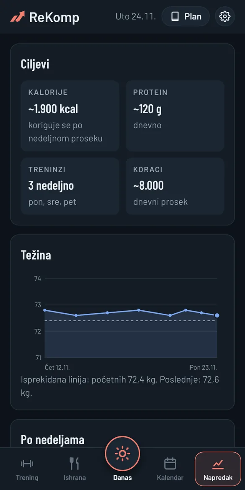

Lični trener · online i uživo u Kragujevcu
Trening i ishrana po tvom rasporedu, ne po šablonu
Ja sam Nikola Marković. Pravim plan treninga i ishrane prema tvom cilju, smenama, opremi i budžetu, a napredak pratimo kroz aplikaciju ReKomp.

Za koga je
- Radiš u smenama ili imaš neredovan raspored, pa ti klasični planovi ne odgovaraju.
- Želiš manje masti i više mišića, veću snagu ili bolju kondiciju.
- Vraćaš se treningu posle pauze i hoćeš da kreneš kako treba.
- Hoćeš jasan plan i ishranu bez ekstremnih dijeta i gladovanja.
Kako izgleda saradnja
Javiš se
Piši mi na nikola@rekomp.me. Dogovaramo cilj, da li radimo online ili uživo i cenu.
Upitnik
Dobiješ pozivni kod za aplikaciju i popuniš upitnik: zdravlje, iskustvo, raspored i smene, ishrana, oprema u kuhinji i budžet.
Tvoj plan
Pravim plan treninga (vežbe, serije, ponavljanja) i ishrane (obroci, recepti, kupovna lista), usklađen sa tvojim danima i smenama.
Svaki dan u aplikaciji
Vidiš šta je na redu i upisuješ težinu, san i treninge. Podsetnici stižu na telefon.
Praćenje i izmene
Pratim napredak i menjam plan prema rezultatima i tome kako se osećaš.
Aplikacija ReKomp
Primer sa izmišljenim podacima.



- Android i iPhone, instalira se sa sajta
- Radi i bez interneta
- Srpski, engleski i ruski
- Tvoje podatke vidimo samo ti i ja
Online ili uživo
Online
Plan i praćenje kroz aplikaciju, odakle god da si. Pitanja i izmene preko mejla.
Uživo u Kragujevcu
Treninzi zajedno u teretani, uz isti plan i praćenje u aplikaciji. Termine dogovaramo.
Cenu i trajanje saradnje dogovaramo pojedinačno, prema onome što ti treba.
Pre početka
Plan nije medicinski savet. Upitnik ima standardna zdravstvena pitanja (PAR-Q). Ako nešto od toga ukazuje na rizik, pre početka se javi lekaru.
Kako čuvam tvoje podatke piše u Politici privatnosti, a pravila saradnje u Uslovima korišćenja.
Javi se
Napiši ukratko šta ti je cilj, kakav ti je raspored i da li bi radio/la online ili uživo.
nikola@rekomp.meKopiranoPersonal trainer · online and in Kragujevac
Training and nutrition built around your schedule, not a template
I'm Nikola Marković. I build training and nutrition plans around your goal, shifts, equipment and budget, and we track your progress in the ReKomp app.
Who it's for
- You work shifts or have an irregular schedule, so standard plans don't fit.
- You want less fat and more muscle, more strength or better fitness.
- You're coming back to training after a break and want to restart the right way.
- You want a clear plan and a way of eating without extreme diets or starving.
How it works
Get in touch
Email me at nikola@rekomp.me. We agree on your goal, online or in person, and the price.
Questionnaire
You get an invite code for the app and fill in a questionnaire: health, experience, schedule and shifts, eating habits, kitchen equipment and budget.
Your plan
I build your training plan (exercises, sets, reps) and nutrition (meals, recipes, shopping list), matched to your days and shifts.
Every day in the app
You see what's next and log your weight, sleep and workouts. Reminders arrive on your phone.
Tracking and adjustments
I follow your progress and adjust the plan based on results and how you feel.
The ReKomp app
Example with made-up data (the screens are in Serbian; the app is also in English and Russian).
- Android and iPhone, installs from the website
- Works offline
- Serbian, English and Russian
- Only you and I can see your data
Online or in person
Online
Plan and tracking in the app, wherever you are. Questions and changes by email.
In person in Kragujevac
Training sessions together at the gym, with the same plan and tracking in the app. We agree on times.
Price and length of coaching are agreed individually, based on what you need.
Before you start
The plan is not medical advice. The questionnaire includes standard health questions (PAR-Q). If any of them points to a risk, see a doctor before you start.
How I handle your data is in the Privacy policy, and the rules of coaching are in the Terms of use.
Get in touch
Write briefly about your goal, your schedule and whether you'd like to work online or in person.
nikola@rekomp.meCopiedЛичный тренер · онлайн и очно в Крагуеваце
Тренировки и питание под твой график, а не по шаблону
Меня зовут Никола Маркович. Я составляю план тренировок и питания под твою цель, смены, оборудование и бюджет, а прогресс мы отслеживаем в приложении ReKomp.
Кому подходит
- Ты работаешь посменно или у тебя нерегулярный график, и обычные планы не подходят.
- Хочешь меньше жира и больше мышц, больше силы или лучшую выносливость.
- Возвращаешься к тренировкам после перерыва и хочешь начать правильно.
- Хочешь понятный план и питание без жёстких диет и голодания.
Как проходит работа
Связываешься со мной
Напиши на nikola@rekomp.me. Договариваемся о цели, формате (онлайн или очно) и цене.
Анкета
Получаешь код приглашения в приложение и заполняешь анкету: здоровье, опыт, график и смены, питание, кухонное оборудование и бюджет.
Твой план
Составляю план тренировок (упражнения, подходы, повторения) и питания (приёмы пищи, рецепты, список покупок) под твои дни и смены.
Каждый день в приложении
Видишь, что дальше, и записываешь вес, сон и тренировки. Напоминания приходят на телефон.
Сопровождение и корректировки
Слежу за прогрессом и меняю план по результатам и самочувствию.
Приложение ReKomp
Пример с вымышленными данными (экраны на сербском; приложение есть и на русском, и на английском).
- Android и iPhone, устанавливается с сайта
- Работает без интернета
- Сербский, английский и русский
- Твои данные видим только ты и я
Онлайн или очно
Онлайн
План и сопровождение в приложении, где бы ты ни был(а). Вопросы и изменения по почте.
Очно в Крагуеваце
Тренировки вместе в зале, с тем же планом и отслеживанием в приложении. Время договариваем.
Цену и длительность работы договариваем индивидуально, исходя из того, что тебе нужно.
Перед началом
План не является медицинской рекомендацией. В анкете есть стандартные вопросы о здоровье (PAR-Q). Если что-то указывает на риск, перед началом обратись к врачу.
Как я храню твои данные, написано в Политике конфиденциальности, а правила работы — в Условиях использования.
Напиши мне
Коротко опиши цель, свой график и как хочешь заниматься: онлайн или очно.
nikola@rekomp.meСкопировано